-
Subject
Digital Marketing -
UX Team
Angeline Andersson, Anna Kapczuk & Tomas Haga -
Role
UX research, concept development, visual identity, illustration & animation -
Timeframe
4 weeks: Fall, 2021
-
Task
Create a support campaign for a charity case, by our own choice, in form of promotional website with an additional advertisement.
We chose Kors på halsen, from Norwegian Red Cross. -
Product
Kors på halsen, Red Cross Helpline for children and Youth; a free helpline for children and youth up to 18 years old. They can either call, send mail or chat and and talk about everything they have on their mind, you will talk to an adult you can trust, and its anonymous.
How to engage adults to engage in the lives of disadvantaged children? Progress plan 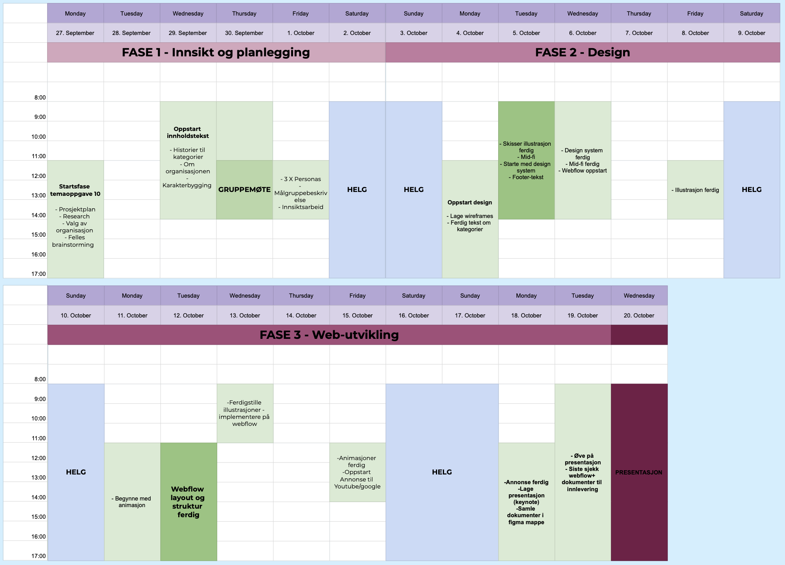 Design Tools 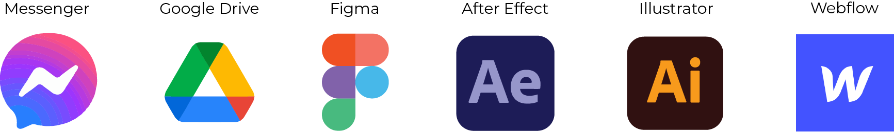 Design Process
 Research of charity and sub-themes
Research of charity and sub-themes
This helpline has existed since 1984, and there is around 160 volunteers in Norway today. As well a part of the large Global network Child Helpline International.
korspaahalsen.rodekors.no/om-oss 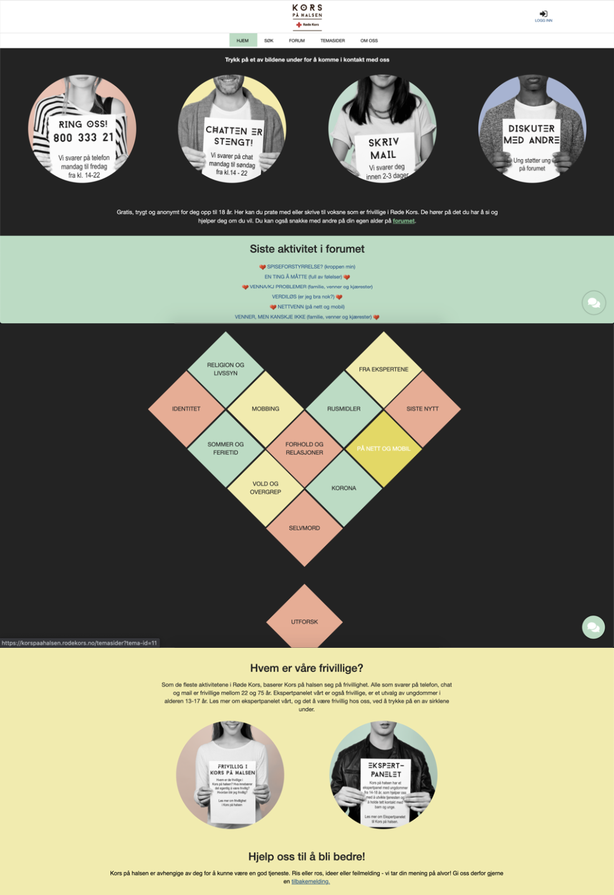Selected sub-themes we wanted to highlight in the campaign:
- - Child abuse
- - Bullying
- - Suicide
The reason we choosing these themes is to highlight the most common issues and questions from the children. These are serious topics that are important to present how serious and relevant those are in the lives of children and youth, in a respectable way.
Child neglect and child abuse is often divided into 4 categories:
- - Mental abuse
- - Physical abuse
-
- Absence of actions, in the form of physical
and emotional neglect and neglect. -
- Other types of violence against children (bullying,
witnesses of violence or violence in close relationships.)
Child abuse and neglect are performed by definition of the caregiver(s), as the person(s) who is responsible for the care. Caregivers can be parents, foster parents, staff at child welfare institutions, but also coaches or others who have temporary care for the child. The definition of children in this context ranges from 0-18 years.
nhi.no/sykdommer/barn/omsorgssvikt-og-barnemishandling/barnemishandling Target groupThe target group consists of a broad group of people ranging from 22 to 65+ years. What they have in common is that they are all concerned with the everyday lives of children and young people, that they thrive in their surroundings and those around them. They are empathetic towards the upbringing of children and young people, and want to make a difference for those who fall outside a safe environment and framework. This is a group of people who, on the basis of this, are engaged in charitable and voluntary work for organizations that work with specific goals and issues.
Concept and text contentFocusing on the sub-themes, we created three fictive stories about the children. Giving us the uppertunity to help them reach out to the world by telling a story of what they are going through daily.
To also get a more clear picture of cases, based on statistics we also show the number of how children are involved.
Adding a footer with key information about the campaign:
Who are we? We are three students from Interaction Design at Kristiania
University College. We have been tasked with creating a campaign website
for a chosen purpose. We chose to create a campaign for Kors på halsen,
an anonymous helpline service for children and youth up to the age of 18.
Colors
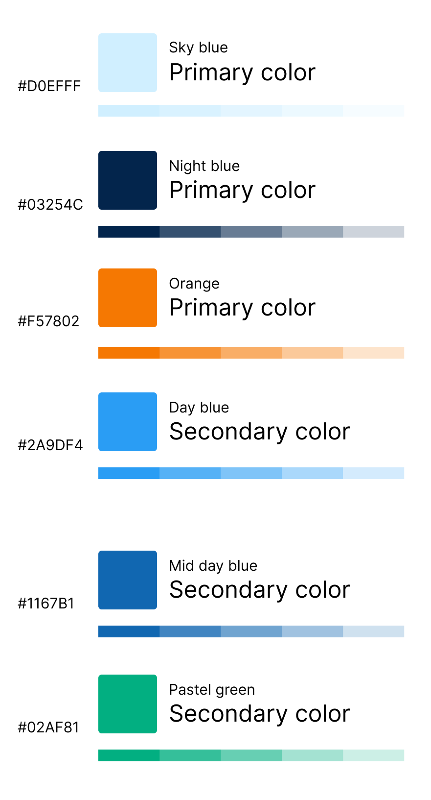We wanted to highlight the details by making orange the «red-thread» through the stories and site.

Typography
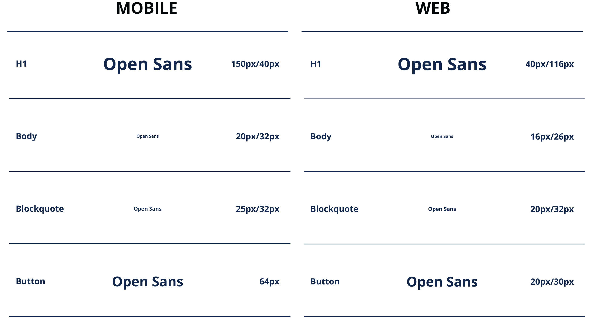Buttons and spacing
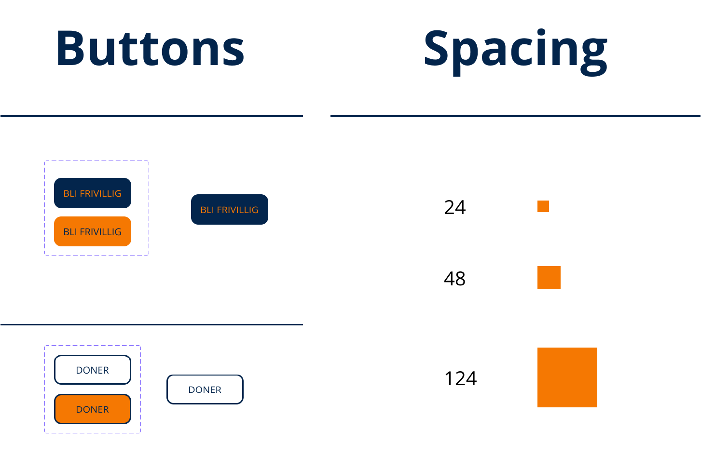Web Content Accessibility Guideline
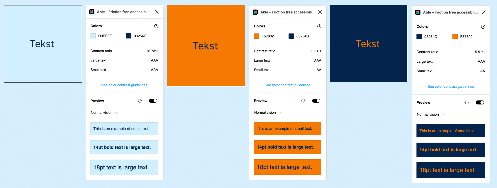 Mid-fi prototype - Desktop and mobile 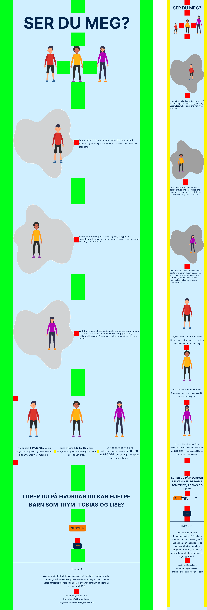 IllustrationsWe created Espen, Tobias and Nora with help of using vector illustrations. Workspace: Adobe Illustrator
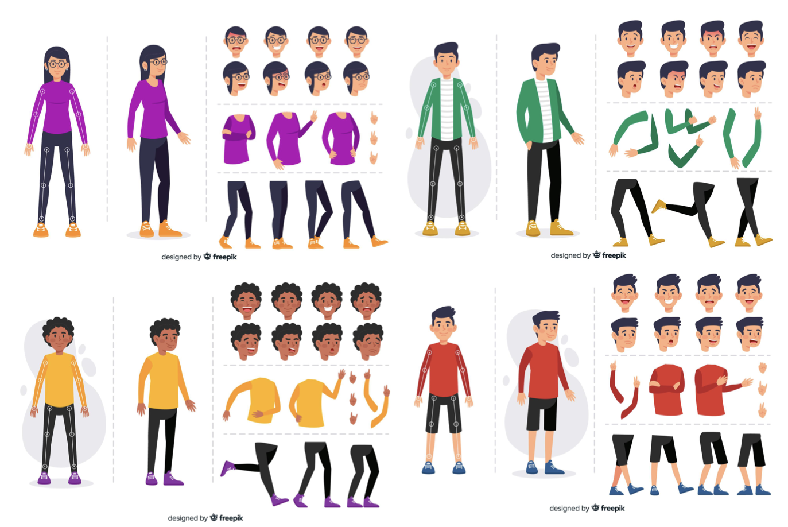 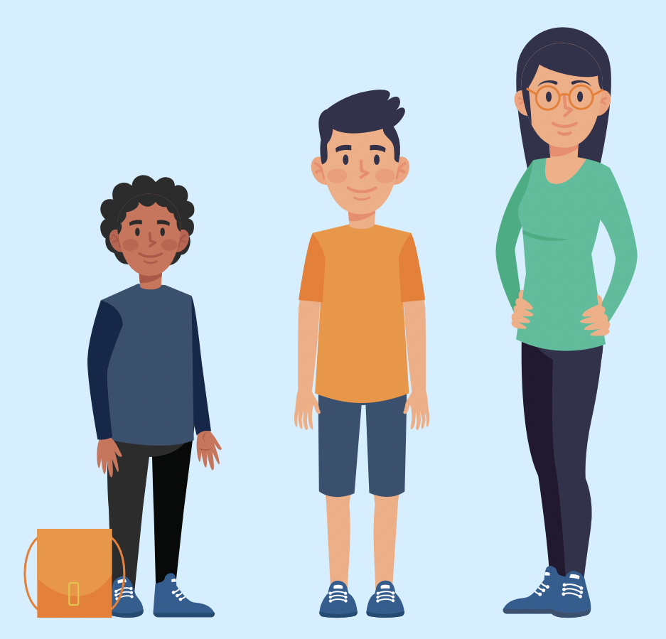 The storiesWireframe and sketches of how the stories will be presented on the site, in terms of making the content fitting the consept and the meaning behind.
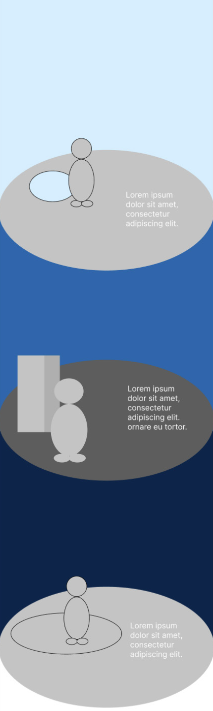 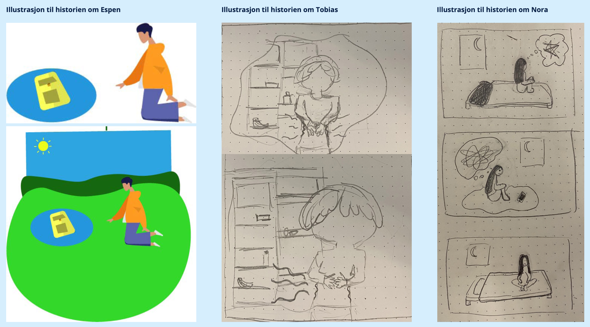Finished illustrations, ready to be animated
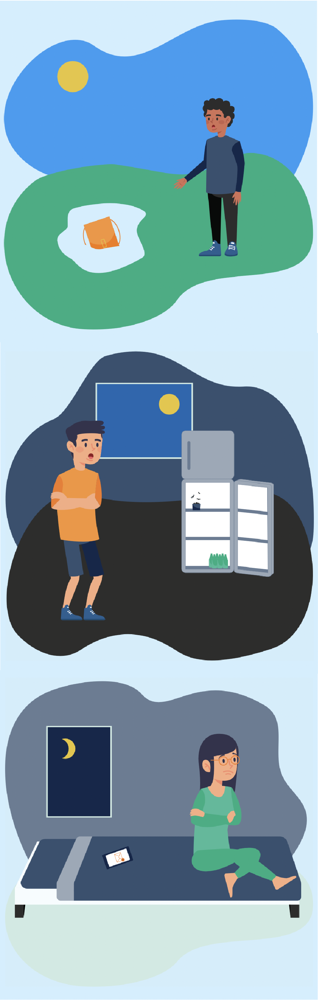 Hi-fi prototype - Desktop and mobile 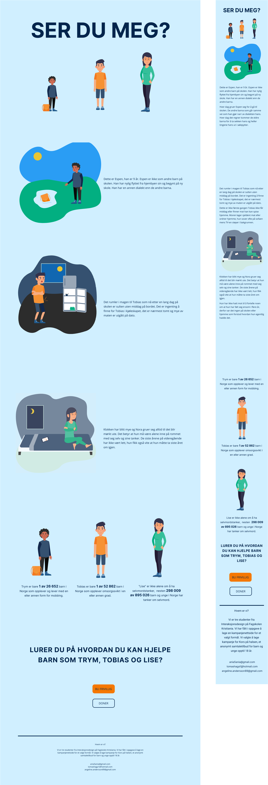Ser du meg - Campaign Page, using Webflow
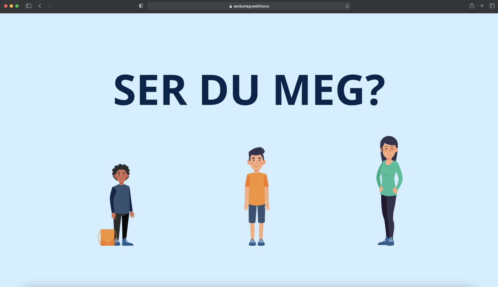 MarketingSketches for the video-ad
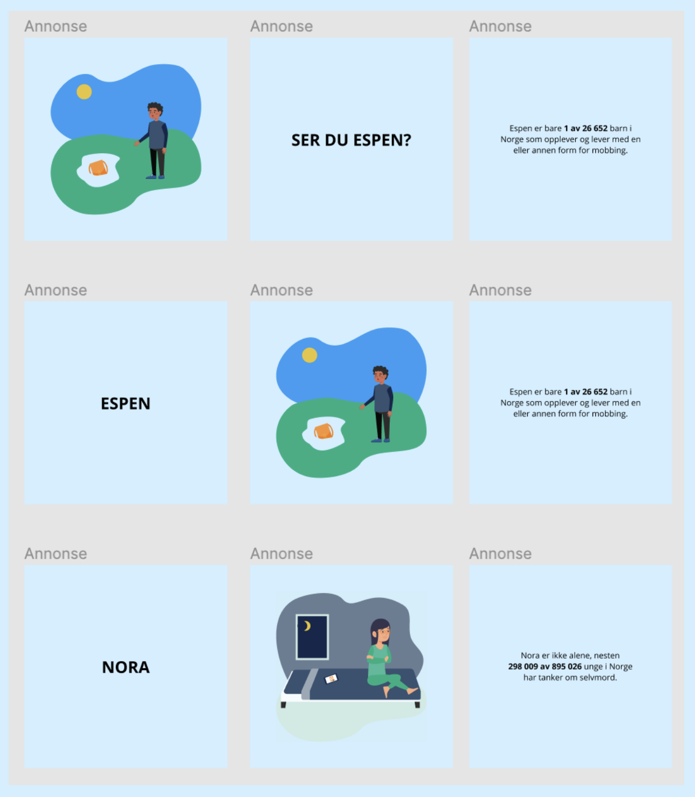Finished video, Workspace: Adobe After Effect
Open GraphUsing Open Graph to manage how the web-content is presented in ad.
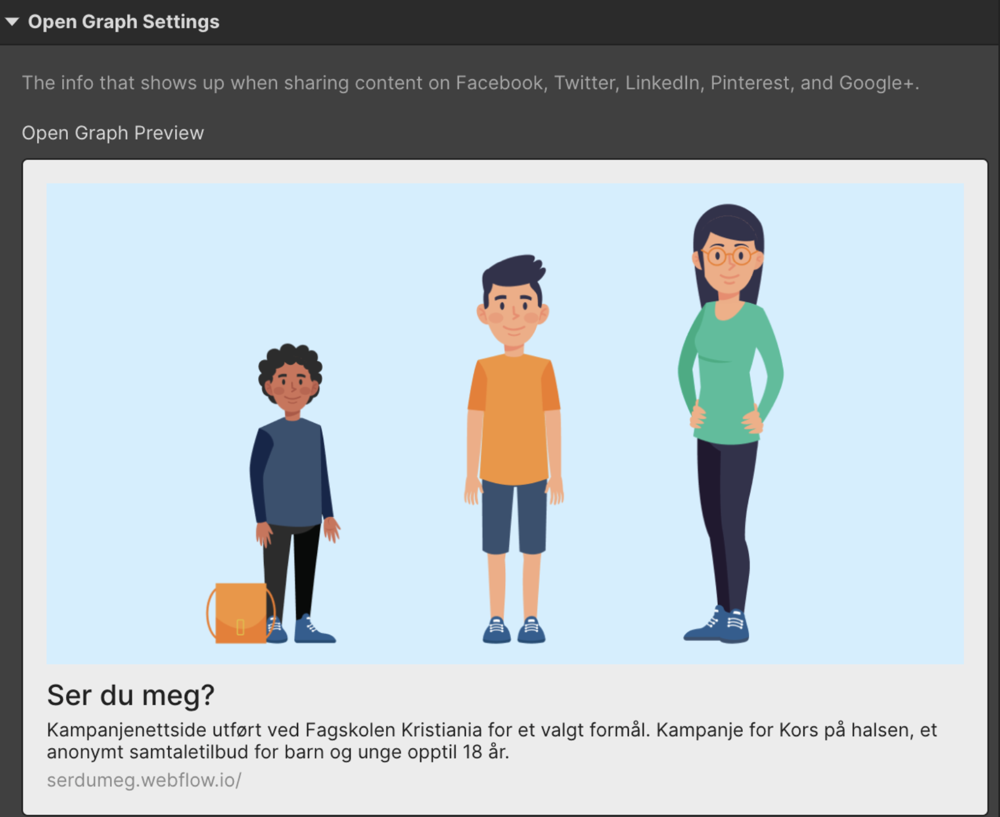 Hotjar & Google AnalyticsUsing Hotjar and Google Analytics to observe the number of visitors and other statistics of the site
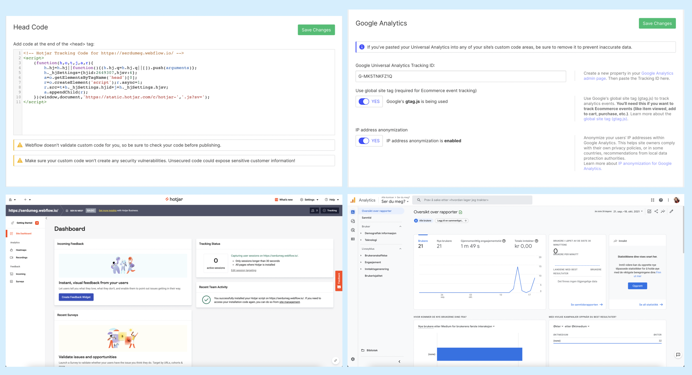